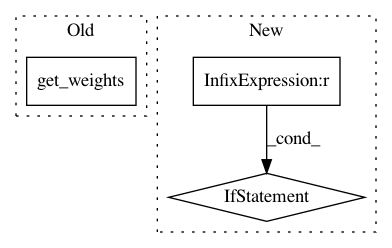

be24159959672c32abb31697e721d96ae6ffaf97,keras/wrappers/scikit_learn.py,BaseWrapper,fit,#BaseWrapper#Any#Any#,97
Before Change
callbacks=self.callbacks)
self.config_ = self.model.get_config()
self.weights_ = self.model.get_weights()
return history
After Change
details about the training history at each epoch.
"""
if self.build_fn is None:
self.model = self.__call__(**self.filter_sk_params(self.__call__))
elif not isinstance(self.build_fn, types.FunctionType):
self.model = self.build_fn(
**self.filter_sk_params(self.build_fn.__call__))
else:
self.model = self.build_fn(**self.filter_sk_params(self.build_fn))
if self.model.loss.__name__ == "categorical_crossentropy"\
and len(y.shape) != 2:
y = to_categorical(y)
In pattern: SUPERPATTERN
Frequency: 3
Non-data size: 3
Instances
Project Name: keras-team/keras
Commit Name: be24159959672c32abb31697e721d96ae6ffaf97
Time: 2016-02-27
Author: ipod825@gmail.com
File Name: keras/wrappers/scikit_learn.py
Class Name: BaseWrapper
Method Name: fit
Project Name: keras-team/keras
Commit Name: ee179f7da155c3cb8129b954db828906886ad4e4
Time: 2015-06-08
Author: francois.chollet@gmail.com
File Name: keras/layers/core.py
Class Name: AutoEncoder
Method Name: get_output
Project Name: keras-team/keras
Commit Name: 36ac91f0576b2295df1f3f8b23c305d69698a0ff
Time: 2017-02-15
Author: francois.chollet@gmail.com
File Name: keras/models.py
Class Name: Sequential
Method Name: get_weights